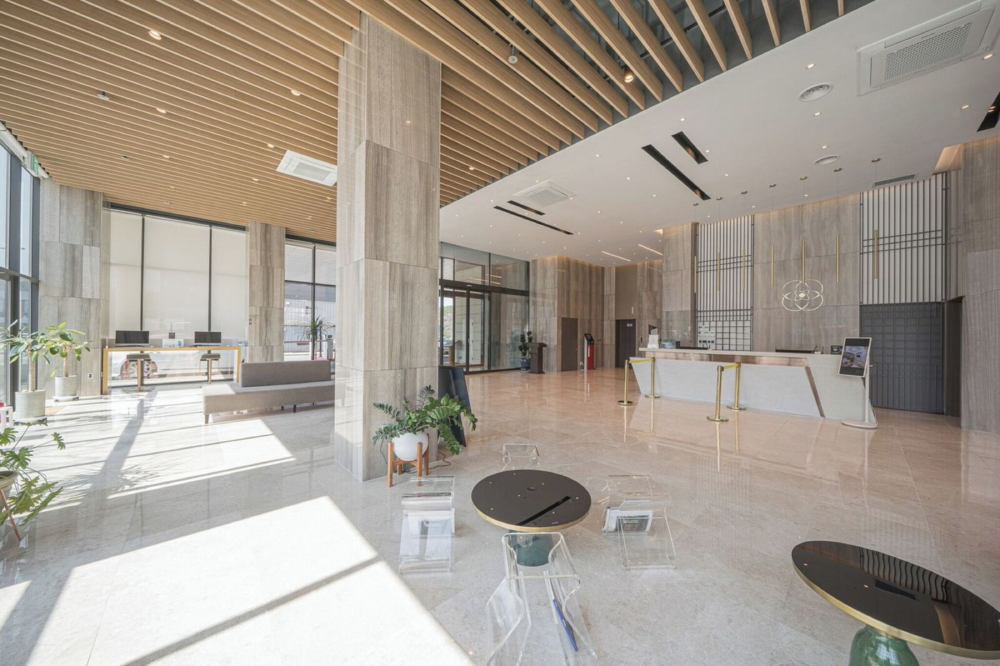
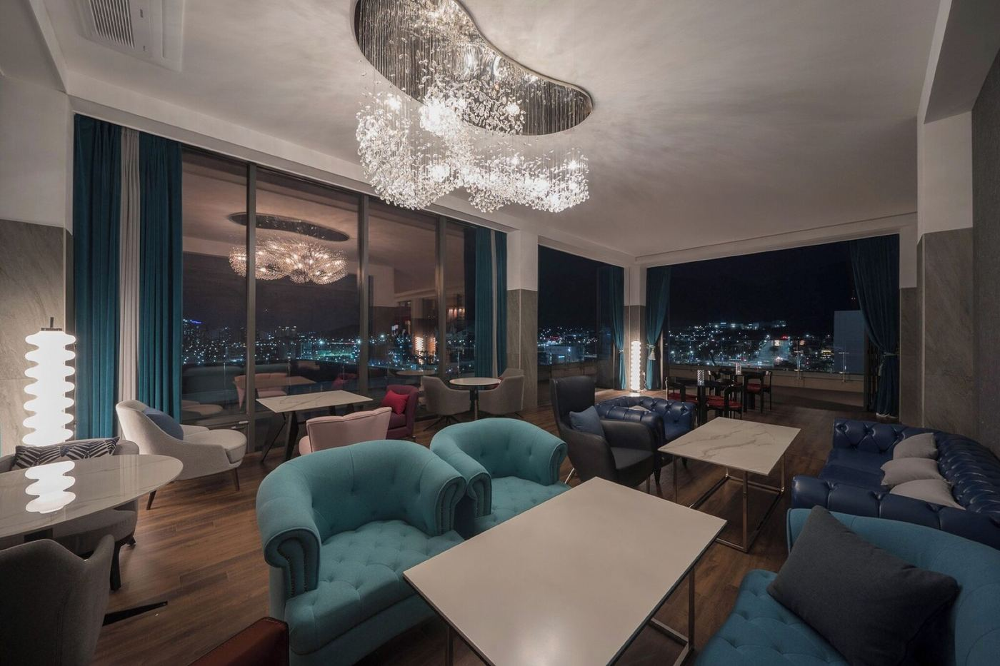
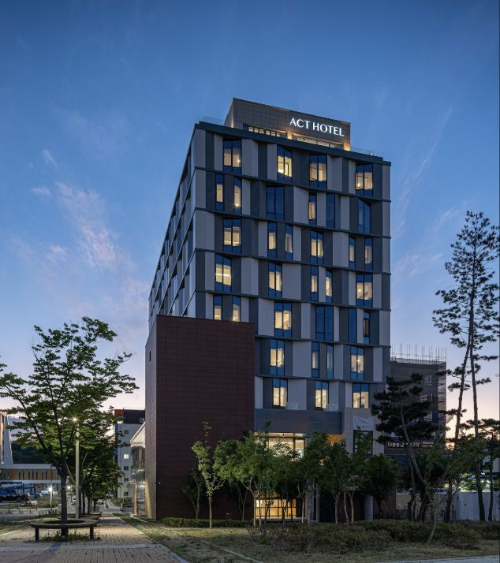

도착부터 머무름까지 하나의 인상을 만듭니다.
호텔의 브랜드 경험은 외관과 로비뿐 아니라 체크인, 대기, 이동과 휴식의 연속된 장면에서 형성됩니다. 공간마다 다른 기능을 가지면서도 같은 태도가 이어져야 합니다.
공개 범위 안내
이 페이지는 위코컴퍼니 공식 포트폴리오에 수록된 프로젝트의 시각 자료와 분류를 검색 가능한 형태로 정리한 아카이브입니다. 계약상 비공개 정보와 운영 수치는 포함하지 않습니다.
HOSPITALITY · GUEST EXPERIENCE
ACT 호텔의 게스트 경험과 공간의 장면을 기록한 위코컴퍼니 공개 프로젝트 아카이브입니다.




호텔의 브랜드 경험은 외관과 로비뿐 아니라 체크인, 대기, 이동과 휴식의 연속된 장면에서 형성됩니다. 공간마다 다른 기능을 가지면서도 같은 태도가 이어져야 합니다.
이 페이지는 위코컴퍼니 공식 포트폴리오에 수록된 프로젝트의 시각 자료와 분류를 검색 가능한 형태로 정리한 아카이브입니다. 계약상 비공개 정보와 운영 수치는 포함하지 않습니다.